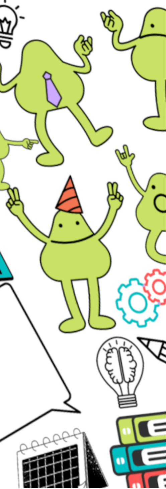

Was ist study warm up?
study warm up ist ein Projekt, das von der Konferenz Schweizerischer Gymnasialrektorinnen und Gymnasialrektoren und im Auftrag von swissuniversities ins Leben gerufen wurde.
In verschiedenen Kursen lernst du Tools kennen, um dich auf das Studium vorzubereiten.
Eigentlich ist die ganze Website ein Studienprojekt dreier Studentinnen der FH Graubünden. Vieles ist frei erfunden.
Impressum

Welche Kurse gibt es bis jetzt?
Beim Start des Projekts im Frühling 2022 haben wir mit vier Kursen auf dieser Seite gestartet. Es werden aber noch laufend weitere dazu kommen.
Gerne kannst du uns auch eine Idee, die dich interssiert, zukommen lassen. Feedback
Folgende Kurse sind bis jetzt verfügbar:
Recherche
Gute Recherche ist die halbe Miete
Beinahe jedes Projekt, sei es in der Schule oder auch später im Studium startet mit der Recherche zum gewählten Thema. Bald schon reicht eine Google-Suche nicht mehr aus, um geeignete Literatur zu finden und du benötigst weitere Hilfsmittel. In diesem Kurs lernst du die wichtigsten Methoden und Werkzeuge kennen.
Zitieren
Was es beim Zitieren zu beachten gibt
So viele Regeln und welche sind nun wirklich wichtig? Das lernst du in diesem Kurs. Ausserdem zeigen wir dir die gängigsten Literaturmanagment-Softwares, mit denen dir das Zitieren gleich viel leichter von der Hand geht.
readme
Was ist das eigentlich?
study warm up ist ein Projekt, das von der Konferenz Schweizerischer Gymnasialrektorinnen und Gymnasialrektoren und im Auftrag von swissuniversities ins Leben gerufen wurde.
In .. verschiedenen Kursen lernst du Tools kennen, die dich im Studium weiterbringen.
moodle
Wenn du an Moodle nicht vorbei kommst...
...hilft dir dieser Kurs.
Zeitmanagement
Das muss nicht so schwierig sein
study warm up ist ein Projekt, das von der Konferenz Schweizerischer Gymnasialrektorinnen und Gymnasialrektoren und im Auftrag von swissuniversities ins Leben gerufen wurde.
In .. verschiedenen Kursen lernst du Tools kennen, die dich im Studium weiterbringen.